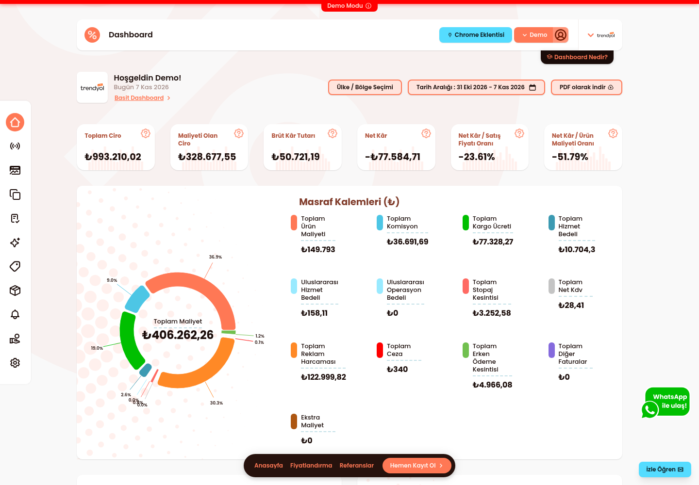
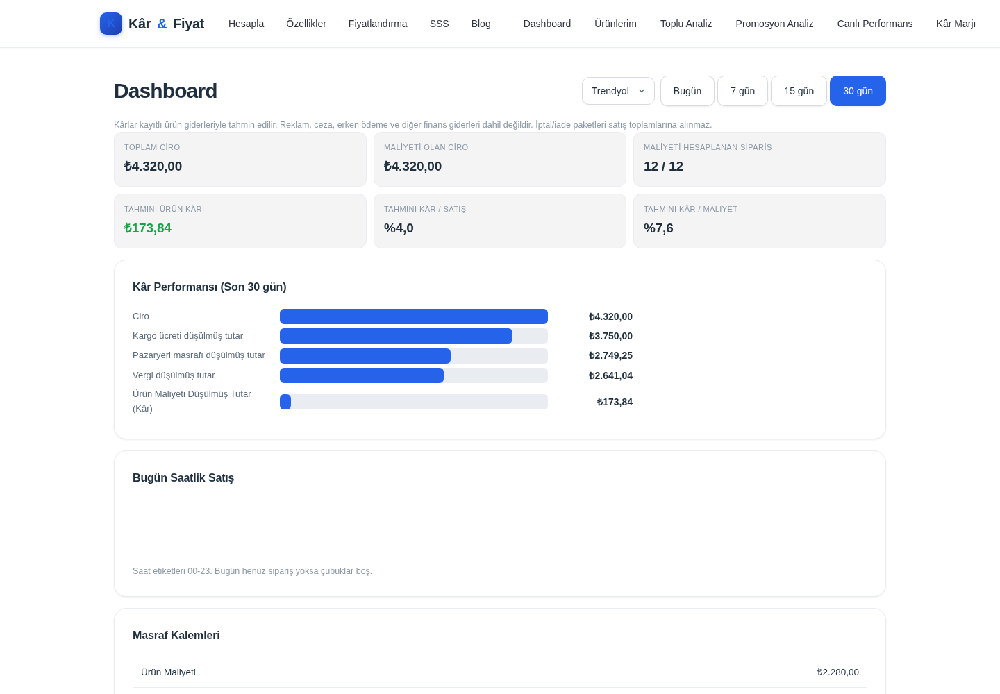
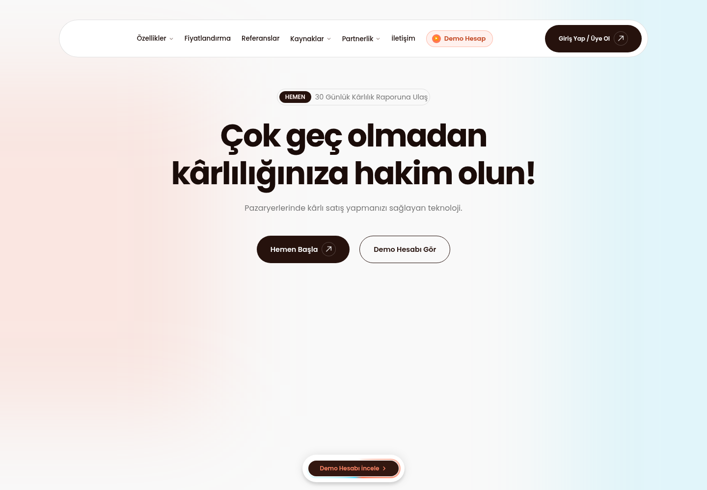
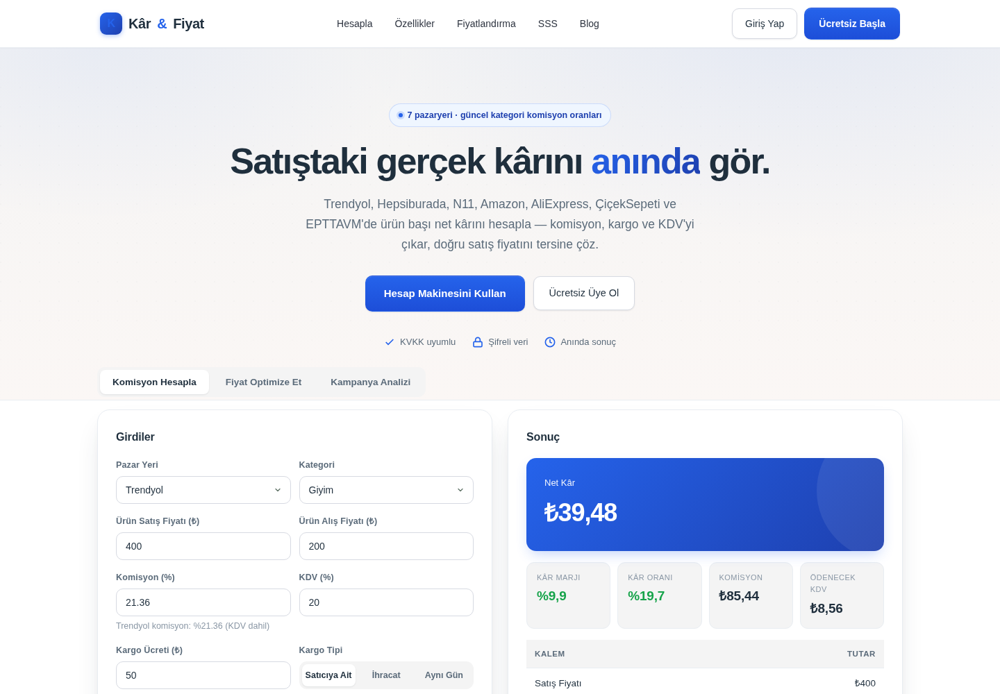

8 Kasım 2026 · Proje 3176128
Sonuç: aynısı olmamış. Benzer ekran adları mevcut; görünüm, veri modeli ve önemli iş akışları farklı.
48 ana adres + 3 ek adres, 30 içerik sayfası ve 12 ayar sekmesi kontrol edildi. 7 adres demo hesabında Dashboard’a yönlendi; bu ekranların iç işlevleri test edilemedi.
Bizim tarafta 37 sayfa/görünüm açıldı. En kritik bulgular: geçmiş maliyetin eski kârı değiştirmesi, KDV hesap farkları, eksik hakediş mutabakatı, menü taşması ve bozuk fiyat önizleme CSV indirmesi.
Ayrıntılı rapor ve test sınırları

Veriler farklıdır; toplam tutarlar eşitlik testi için kullanılmamıştır.


| Referans | Bizde | Durum | Bulgu |
|---|---|---|---|
| Ana sayfa Ekran açıldı | index.php | Farklı | Referans pazaryeri finans ürünü sunuyor; biz hesap makinesi odaklıyız. Renk, font, navigasyon, bölüm yerleşimi ve etkileşimler farklı. |
| Fiyatlandırma Ekran açıldı | index.php#pricing / odeme.php | Farklı | Referansta hacme göre Starter/Business/Enterprise ve aylık/yıllık plan var. Bizde ücretsiz + sabit 149 TL Pro modeli var. |
| Referanslar Ekran açıldı | — | Eksik | Bağımsız müşteri referansları sayfası yok. |
| SSS Ekran açıldı | index.php içi | Kısmi | Ana sayfada sorular var; referanstaki bağımsız SSS düzeniyle aynı değil. |
| İletişim Ekran açıldı | — | Eksik | Referanstaki ad/soyad/telefon/konu/mesaj formu ve destek sunumu yok. |
| Gizlilik Ekran açıldı | kvkk.php | Farklı | Sayfa var; metin, şirket bilgileri ve veri süreçleri kendi ürünümüze göre ayrıca tamamlanmalı. Metin benzerliği hukuki yeterlilik değildir. |
| Kullanım koşulları Ekran açıldı | kosullar.php | Farklı | Sayfa var; kapsam ve abonelik koşulları referanstan farklı. |
| QNB Dijital Köprü Ekran açıldı | — | Eksik | Banka iş ortaklığı akışı yok; aynı ortaklığa sahip olduğumuz varsayılamaz. |
| Blog Ekran açıldı | blog.php / blog-detay.php | Kısmi | Bizim test kurulumunda blog listesi başlangıçta boştu. İzole test yazısı eklendiğinde liste ve geçerli detay açıldı; referanstaki içerik/kategori düzeni yok. Referansta listelenmiş 11 yazı var. |
| Yardım merkezi Ekran açıldı | — | Eksik | Referanstaki 19 ekran rehberi, anlatımlı ekran görüntüleri ve kullanım turları yok. |
| Mobil uygulama Ekran açıldı | — | Eksik | Referans iOS/Android uygulaması ve bildirimlerini tanıtıyor. Bizde web arayüzü var; mobil uygulama yok. |
| Önerilen fiyatlar Ekran açıldı | kar-marji.php | Kısmi | Hedef kâra göre fiyat önizlemesi var. Pazar ortalaması, kategori hedefleri ve kampanya öneri sistemi yok. |
| Partner programı Ekran açıldı | hesabim.php yönlendirme alanı | Kısmi | Basit yönlendirme yapısı var; referansın sürekli yüzde 15 hakediş/partner paneliyle eşdeğer değil. |
| Chrome eklentisi Ekran açıldı | — | Eksik | Trendyol paneli içinde çalışan bir tarayıcı eklentisi yok. |
| Pazar Zekası tanıtımı Ekran açıldı | pazar-zekasi.php | Kısmi | Bizde doğrudan basit takip ekranı var. Referanstaki ayrı ürün tanıtımı ve modül seti yok. |
| Giriş / kayıt Ekran açıldı | giris.php / kayit.php | Farklı | Referans e-posta PIN koduyla giriş sunuyor. Biz e-posta/şifre kullanıyoruz; ayrıca TOTP var. PIN/e-posta teslimatı eşdeğerliği yok. |
| Dashboard Ekran açıldı | dashboard.php | Kısmi | Referansta brüt/net kâr ayrımı, reklam/ceza/erken ödeme/diğer fatura kırılımı ve ülke filtresi var. Bizde ürün giderlerine dayalı tahmini özet var; tam finans mutabakatı yok. |
| Basit Dashboard Ekran açıldı | dashboard.php | Kısmi | Referanstaki ayrı /old-dashboard görünümünün bağımsız karşılığı yok. |
| Canlı Performans Ekran açıldı | canli-performans.php | Kısmi | Saatlik grafik, günlük özet ve maliyet girişi bulunuyor. Sipariş detay kırılımı, gelişmiş filtreler ve dosya üretim deneyimi aynı değil. |
| Ürün Komisyon Tarifesi Ekran açıldı | promosyon-analiz.php?mod=komisyon | Kısmi | Referans varyantlı, filtreli ve fiyat kademeli tablo sunuyor. Biz CSV yükleme üzerinden ortak analiz akışı kullanıyoruz; gerçek platform dosyasıyla tam gidiş-dönüş henüz doğrulanmadı. |
| Plus Komisyon Tarifesi Ekran açıldı | promosyon-analiz.php?mod=plus | Kısmi | Modül adı ve kolon seçimi var; Plus fiyat/komisyon kurallarının ayrı kapsamı ve arayüzü referansla eşdeğer değil. |
| Avantajlı Ürün Etiketi Ekran açıldı | promosyon-analiz.php?mod=etiket | Kısmi | Basit CSV kademe hesabı var; referanstaki öneri, gelişmiş toplu seçim ve varyant deneyimi yok. |
| Flaş Ürünler Ekran açıldı | promosyon-analiz.php?mod=flash | Kısmi | Aynı ortak CSV motoru kullanılıyor; referanstaki dönem/saat teklif akışı ve ürün tablosuyla aynı değil. |
| İndirimler Ekran açıldı | promosyon-analiz.php?mod=indirim | Kısmi | Referans manuel teklif hesabı ve seçimli ürün tablosu sunuyor. Bizde ortak CSV hesabı var; kampanya koşullarının tümü modellenmemiş. |
| Kampanyalar Ekran açıldı | promosyon-analiz.php?mod=kampanya | Kısmi | Karşılama oranı, min sepet ve kampanya türlerinin ayrı hesaplama davranışları tamamlanmış değil. |
| Kendi Kampanyanı Oluştur Ekran açıldı | — | Eksik | Referansta ayrı kampanya ekranı var; aynı işlev bizde yok. |
| Avantajlı Teklifler Ekran açıldı | — | Eksik | Referansta ayrı teklif kademeleri ekranı var; birebir karşılık yok. |
| Sepet Kampanyaları Ekran açıldı | — | Eksik | Hepsiburada sepet kampanyası, hedefe uygunluk ve manuel teklif hesabı karşılığı yok. |
| Sipariş Kârlılık Analizi Ekran açıldı | raporlar.php?r=order | Kısmi | Bizde paket/satır hesabı ve CSV var. Referanstaki sipariş detay finans kırılımı, özel tarih aralığı ve üretilmiş rapor akışı eksik. |
| Ürün Kârlılık Analizi Ekran açıldı | raporlar.php?r=product | Kısmi | Ürün toplamları var; sipariş anı maliyetleri, gelişmiş kolonlar ve aynı rapor dosyası akışı yok. |
| Kategori Kârlılık Analizi Ekran açıldı | raporlar.php?r=category | Kısmi | Kategori bazlı toplam var. Gerçek finans giderleri ve tarihsel maliyetlerden aynı sonuç üretildiği doğrulanmış değil. |
| İade Zarar Analizi Ekran açıldı | raporlar.php?r=return | Kısmi | Biz iade finans kayıtlarını gösteriyoruz. Gidiş/dönüş kargosu ve ürün durumuna göre gerçek iade zararı hesaplanmıyor. |
| Reklam Kârlılık Analizi Ekran açıldı | raporlar.php?r=ads | Kısmi | Bizde kayıtlı reklam giderleri görünümü var; reklam/influencer veri toplama ve siparişe atıf kapsamı tamamlanmış değil. |
| Kampanya Kârlılık Analizi Ekran açıldı | raporlar.php?r=campaign | Kısmi | Kupon/indirim netleri var. Referanstaki kampanya/tür bazlı performans ayrıntılarıyla aynı değil. |
| Kâr Marjı Listesi Ekran açıldı | kar-marji.php | Hatalı/Kısmi | Liste ve hedefe göre fiyat önizlemesi çalışıyor. Önizleme CSV indirmesi HTML döndürüyor. Pazar ortalaması ve önerilen fiyat kapsamı eksik. |
| Buybox Ekran açıldı | raporlar.php?r=buybox | Eksik | Bizim görünüm yalnız kendi ürünlerinin kategori içi fiyat karşılaştırması. Rakip satıcı, gerçek Buybox sırası/sahipliği ve kazanma oranı yok. |
| Ürün Fiyatlandırma Ekran açıldı | index.php hesap makinesi | Kısmi | Temel net kâr/hedef fiyat hesabı var. Teslimat tipi, mikro ihracat ve ayrı KDV bileşenlerinin tamamı modellenmiyor. |
| Ürün Ayarları Ekran açıldı | urunler.php | Kısmi | Maliyet/ürün içe aktarma var. Model-renk-beden yönetimi, pazaryerleri arası ürün eşleştirme ve sipariş anı maliyet saklama eksik. |
| Uyarı Sayfası Ekran açıldı | uyarilar.php | Kısmi | Maliyetsiz/zarar/stok/desi uyarıları var; kurallar, bildirim kanalları ve finans denetimleri aynı değil. |
| Hakediş & Desi Kontrolü Ekran açıldı | hakedis-desi.php | Hatalı/Kısmi | Biz manuel tutarı son 30 gün satış toplamıyla karşılaştırıyoruz. Sipariş bazlı fazla kargo, eksik iade komisyonu ve hakediş mutabakatı yok; aynı adlı işlevin kapsamı farklı. |
| Pazar Zekası Dashboard Demo Dashboard yönlendirmesi; iç işlev test edilmedi | pazar-zekasi.php | Eksik | Basit takip listesi dışında bağımsız pazar istihbaratı özet paneli yok. |
| Mağaza Takibi Demo Dashboard yönlendirmesi; iç işlev test edilmedi | pazar-zekasi.php type=store | Kısmi | URL bazlı takip ve tarayıcı servisi var; referanstaki tarihsel mağaza analitiğiyle eşdeğerliği doğrulanmadı. |
| Ürün Takibi Demo Dashboard yönlendirmesi; iç işlev test edilmedi | pazar-zekasi.php type=product | Kısmi | URL/fiyat takibi var; favori, yorum, puan, satıcı/Buybox ve kampanya metriklerinin tamamı yok. |
| Pazar Zekası Bildirimleri Demo Dashboard yönlendirmesi; iç işlev test edilmedi | — | Eksik | Pazar değişikliği bildirim merkezi ve kuralları için ayrı ekran yok. |
| Reklam Radarı Demo Dashboard yönlendirmesi; iç işlev test edilmedi | — | Eksik | Arama kelimesi/rakip reklam ve TBM analizi için modül yok. |
| Influencer Radarı Demo Dashboard yönlendirmesi; iç işlev test edilmedi | — | Eksik | Influencer ürün/kampanya takip modülü yok. |
| Partner paneli Demo Dashboard yönlendirmesi; iç işlev test edilmedi | — | Eksik | Ayrı partner hakediş paneli yok; referanstaki ekranın demo erişim sınırı ayrıca kaydedilir. |
| Ayarlar Ekran açıldı | hesabim.php / magaza.php / odeme.php | Kısmi | Bizde hesap, TOTP, bağlantı ve ödeme ekranları ayrı. Referanstaki rapor mailleri, pazaryeri ayarları ve gelişmiş tercihler aynı kapsamda değil. |